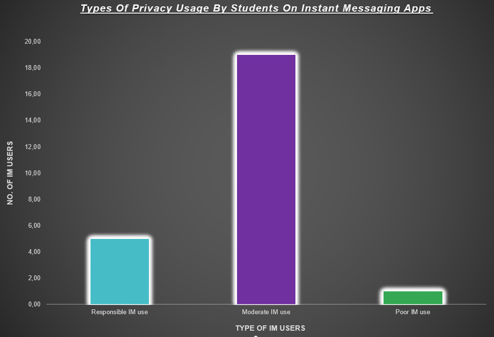

Image taken from Retail In Asia
| Home | Discussion And Analysis | Conclusion | Bibliography |
|---|
While instant messaging can be a useful tool for communication and collaboration, it can also have negative effects on students and the negative effect of instant messaging are that Instant messaging can be a major distraction for students, especially when they use messaging apps during class or study time. Constant notifications and the urge to respond immediately can disrupt concentration and hinder productivity. Instant messaging platforms can be misused for cyber bullying or online harassment. Students may be subjected to bullying, teasing, or other negative behaviours, causing emotional distress and negatively impacting their mental health. Teach students effective time management skills, encouraging them to prioritize their academic tasks and allocate specific periods for uninterrupted studying. (Razamith, 2021).

In my research I found that a vast majority of students make moderate use of measures that enable them to keep their engagement on instant messaging platforms safe and private but moderate use of privacy measures still leaves them exposed to some online dangers and risk hence this leaves room for improvement in their knowledge of instant messaging safety however there are other students who make sure that they are highly responsible and aware of all the ways one can ensure that their online activity on instant messaging apps is kept safely secure but the few others left are fully aware that they aren’t taking the measures needed to ensure that their online activity on instant messaging is safe and secure which leaves them fully vulnerable to all sorts of instant messaging privacy violations.

To prevent or minimize the negative impact of instant messaging on students, here are some strategies that can be implemented. Provide students with education and training on digital literacy, including responsible use of instant messaging platforms. Teach them about the potential risks, online etiquette, and strategies for managing their time effectively while using messaging apps. Develop clear guidelines or policies regarding the use of instant messaging during school hours or study time. Set expectations for appropriate usage, such as limiting messaging app access during class or designated study periods to minimize distractions (Scarpati, 2022).
Website Created By:
Lorna NcetaniComputer Application And Tecnology PAT (2023)